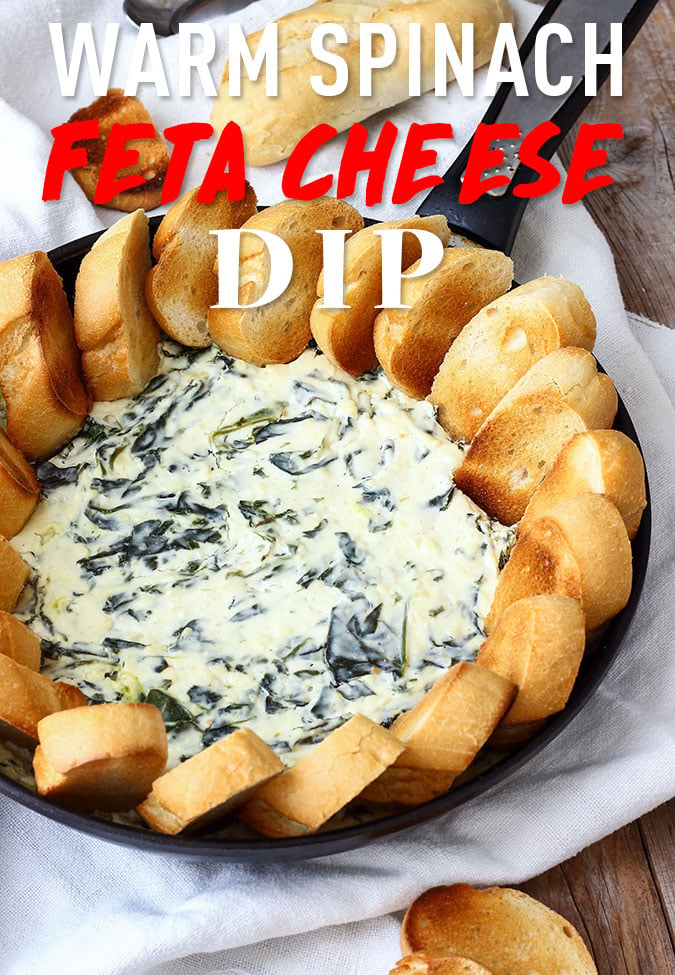

Recipe

Spinach Feta Dip
-
2 tbsp Olive Oil
-
7 cups Fresh Spinach
-
3 Garlic Cloves
-
7 oz Cream Cheese
-
1 cup Feta Cheese, crumbled
-
1 cup plain Greek Yogurt
Instructions
-
Heat up oil in your skillet and add spinach. Sauté until soft. If you can’t fit all spinach in your skillet in one go simply add half and wait until it shrinks to add the rest of it.
-
Add in minced garlic and sauté for a minute or 2. Turn off the heat and set aside.
-
In a bowl combine cream cheese, crumbled feta and Greek yogurt (for best results mix with a mixer). Stir in sautéed spinach and pour everything back in the skillet.
-
Bake at 400°F in a preheated oven for 15-20 minutes or until heated through.
-
Serve with rolls, baguettes, crostini or anything you like.